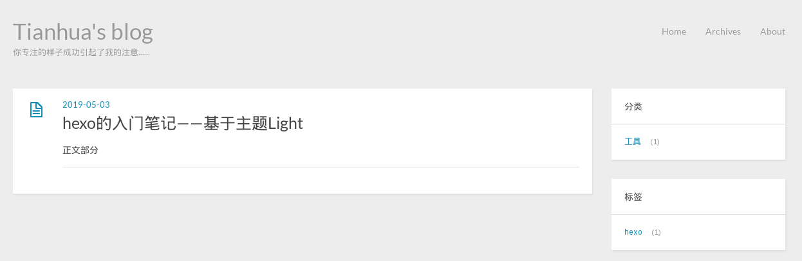

<!DOCTYPE HTML>
<html>
<head><meta name="generator" content="Hexo 3.8.0">
  <meta charset="utf-8">
  
  <title>hexo的入门笔记——基于主题Light | Tianhua&#39;s blog</title>
  <meta name="author" content="Tianhua He">
  
  <meta name="description" content="关于技术，关于生活，或许不成熟的想法。">
  
  
  <meta name="viewport" content="width=device-width, initial-scale=1, maximum-scale=1">

  <meta property="og:title" content="hexo的入门笔记——基于主题Light">
  <meta property="og:site_name" content="Tianhua&#39;s blog">

  
    <meta property="og:image" content>
  

  <link href="/favicon.ico" rel="icon" type="image/x-ico">
  
  <link rel="alternate" href="/atom.xml" title="Tianhua&#39;s blog" type="application/atom+xml">
  <link rel="stylesheet" href="/css/style.css" media="screen" type="text/css">
  <!--[if lt IE 9]><script src="//html5shiv.googlecode.com/svn/trunk/html5.js"></script><![endif]-->
  

</head>
</html>

<body>
  <header id="header" class="inner"><div class="alignleft">
  <h1><a href="/">Tianhua&#39;s blog</a></h1>
  <h2><a href="/">你专注的样子成功引起了我的注意......</a></h2>
</div>
<nav id="main-nav" class="alignright">
  <ul>
    
      <li><a href="/">Home</a></li>
    
      <li><a href="/archives">Archives</a></li>
    
      <li><a href="/about">About</a></li>
    
  </ul>
  <div class="clearfix"></div>
</nav>
<div class="clearfix"></div>
</header>
  <div id="content" class="inner">
    <div id="main-col" class="alignleft"><div id="wrapper"><article class="post">
  
  <div class="post-content">
    <header>
      
        <div class="icon"></div>
        <time datetime="2019-05-03T04:07:55.000Z"><a href="/2019/05/03/hexo-setting/">2019-05-03</a></time>
      
      
  
    <h1 class="title">hexo的入门笔记——基于主题Light</h1>
  

    </header>
    <div class="entry">
      
        <p><br>趁着五一放假，花了一天时间了解了一下hexo这个博客工具，参照前人的经验分享，慢慢摸索着搭建起了第一个个人主页。这里从一个小白的角度记录一下这个过程。<br><a id="more"></a></p>
<!-- ttoc -->
<p>感谢<a href="http://www.zipperary.com/categories/hexo/" target="_blank" rel="noopener">zippera</a>的博文分享，以及<a href="http://blog.parryqiu.com/" target="_blank" rel="noopener">parryqiu</a>的<a href="http://www.devopen.club/course/hexo" target="_blank" rel="noopener">视频教程</a>。</p>
<h2><span id="1-准备工作">1. 准备工作</span></h2><p>确保已经成功安装以下两个程序：</p>
<ul>
<li><a href="https://git-scm.com/" target="_blank" rel="noopener">Git</a></li>
<li><a href="https://nodejs.org/en/" target="_blank" rel="noopener">Node.js</a></li>
</ul>
<p>对Markdown要所有了解，便于之后博客的撰写。同时，需要注册一个<a href="https://github.com/" target="_blank" rel="noopener">github</a>、<a href="https://coding.net/" target="_blank" rel="noopener">Coding</a>账号，用于博客部署发布。</p>
<h2><span id="2-hexo-workflow">2. hexo workflow</span></h2><ol>
<li>安装：<code>npm install hexo-cli -g</code>；</li>
<li>初始化博客：<code>hexo init blog</code> 执行命令后会在当前目录下创建一个<code>blog</code>文件夹，包含博客的所有文件；</li>
<li>进入博客目录：<code>cd blog</code>;</li>
<li>安装依赖包：<code>npm install</code>;</li>
</ol>
<p>以上是初始设置，日常写博客和发布博客的操作为：</p>
<ol start="5">
<li>创建博客：<code>hexo new &#39;title&#39;</code>，<code>title</code>替换为博客标题。会在<code>../blog/source/_posts</code>创建一个<code>title.md</code>的Markdown文件，打开这个文件，在里面撰写博客内容；</li>
<li>部署到本地：<code>hexo server</code>(或<code>hexo s</code>)，本地默认端口4000，浏览器上通过<code>localhost:4000</code>访问本地博客页面；</li>
</ol>
<p>如果博客已经部署到网络（后面介绍），进行下面的操作发布：</p>
<ol start="7">
<li>生成静态网页：<code>hexo generate</code>（或<code>hexo g</code>)，首次操作会创建文件夹<code>../blog/public</code>，静态网页文件都保存在该文件夹;</li>
<li>部署到网络：<code>hexo deploy</code>(或<code>hexo d</code>)。</li>
</ol>
<p>以上是用hexo写博客的基本流程，之后会记录一些操作细节。</p>
<h2><span id="3-主页信息设置">3. 主页信息设置</span></h2><p>更改博客名、描述、作者等信息，只需要编辑博客配置文件<code>../blog/_config.yml</code>。填写下面字段的信息，可以有空缺。<br><figure class="highlight yml"><table><tr><td class="gutter"><pre><span class="line">1</span><br><span class="line">2</span><br><span class="line">3</span><br><span class="line">4</span><br><span class="line">5</span><br><span class="line">6</span><br><span class="line">7</span><br><span class="line">8</span><br><span class="line">9</span><br></pre></td><td class="code"><pre><span class="line"><span class="comment"># Site</span></span><br><span class="line"><span class="attr">title:</span> <span class="string">Tianhua's</span> <span class="string">blog</span></span><br><span class="line"><span class="attr">subtitle:</span> <span class="string">你专注的样子成功引起了我的注意......</span></span><br><span class="line"><span class="attr">description:</span> <span class="string">关于技术，关于生活，或许不成熟的想法。</span></span><br><span class="line"><span class="attr">keywords:</span></span><br><span class="line"><span class="attr">author:</span> <span class="string">Tianhua</span> <span class="string">He</span></span><br><span class="line"><span class="attr">email:</span> <span class="string">hetianhua2010@live.cn</span></span><br><span class="line"><span class="attr">language:</span> <span class="string">zh-CN</span></span><br><span class="line"><span class="attr">timezone:</span></span><br></pre></td></tr></table></figure></p>
<h2><span id="4-更改主题">4. 更改主题</span></h2><p>完成上面的操作可以得到一个使用默认主题<a href="https://github.com/hexojs/hexo-theme-landscape" target="_blank" rel="noopener">Landscape</a>的博客页面，之后可以方便地换成其它喜爱的主题。hexo官方提供了一些<a href="https://hexo.io/themes/" target="_blank" rel="noopener">主题</a>可供选择。这里选择了以简洁的<a href="https://github.com/hexojs/hexo-theme-light" target="_blank" rel="noopener">Light</a>主题为基础。</p>
<p>执行下面的命令安装主题（确认已切换至博客的根目录<code>../blog</code>)<br><figure class="highlight bash"><table><tr><td class="gutter"><pre><span class="line">1</span><br></pre></td><td class="code"><pre><span class="line">git <span class="built_in">clone</span> https://github.com/hexojs/hexo-theme-light.git themes/light</span><br></pre></td></tr></table></figure></p>
<p>在<code>../blog/themes</code>增加了一个<code>light</code>文件夹。</p>
<p>打开配置文件<code>../blog/_config.yml</code>，找到下面的字段，将landscape改为light即完成主题切换。<br><figure class="highlight yml"><table><tr><td class="gutter"><pre><span class="line">1</span><br><span class="line">2</span><br><span class="line">3</span><br><span class="line">4</span><br></pre></td><td class="code"><pre><span class="line"><span class="comment"># Extensions</span></span><br><span class="line"><span class="comment">## Plugins: https://hexo.io/plugins/</span></span><br><span class="line"><span class="comment">## Themes: https://hexo.io/themes/</span></span><br><span class="line"><span class="attr">theme:</span> <span class="string">light</span></span><br></pre></td></tr></table></figure></p>
<h2><span id="5-主题配置">5. 主题配置</span></h2><p>根据个人喜好设置页面外观，需要修改light文件夹中的内容。以下配置都是基于默认的light主题，我希望页面足够简洁（复杂的不会……)。</p>
<h3><span id="51-挂件-widgets">5.1 挂件 widgets</span></h3><p>页面右侧默认情况下有三个挂件：search、category和tag。考虑到写文章不会太多，页面搜索功能并无多大必要，通过分类和标签找文章已然足够。</p>
<p>打开主题配置文件<code>../blog/themes/light/_config.yml</code>，修改下面的字段<br><figure class="highlight yml"><table><tr><td class="gutter"><pre><span class="line">1</span><br><span class="line">2</span><br><span class="line">3</span><br><span class="line">4</span><br><span class="line">5</span><br></pre></td><td class="code"><pre><span class="line"><span class="attr">widgets:</span></span><br><span class="line"><span class="comment">#- search</span></span><br><span class="line"><span class="bullet">-</span> <span class="string">category</span></span><br><span class="line"><span class="bullet">-</span> <span class="string">tag</span></span><br><span class="line"><span class="bullet">-</span> <span class="string">tagcloud</span></span><br></pre></td></tr></table></figure></p>
<p>注释掉search，同时添加标签云tagcloud。</p>
<h3><span id="52-删除评论分块">5.2 删除评论分块</span></h3><p>看了其他人的一些博客，个人感觉加入评论区会使得页面看起来比较杂乱。关于文章内容的讨论可以通过邮件或其它社交平台，因此有必要单独增加一个About页面，展示个人联系方式信息。</p>
<p>light主题在每篇文章底下会有一个默认的评论区分块，这里需要将它删除。</p>
<p>打开文件<code>../blog/themes/light/layout/comment.ejs</code>删除<code>&lt;% if (page.comments){ %&gt; ...... &lt;% } %&gt;</code>中间的内容。</p>
<h3><span id="53-添加about页面">5.3 添加（About）页面</span></h3><p>执行命令<code>hexo new page &#39;about&#39;</code>创建About页面，打开主题设置文件<code>../blog/themes/light/_config.yml</code>，修改下面的字段<br><figure class="highlight yml"><table><tr><td class="gutter"><pre><span class="line">1</span><br><span class="line">2</span><br><span class="line">3</span><br><span class="line">4</span><br></pre></td><td class="code"><pre><span class="line"><span class="attr">menu:</span></span><br><span class="line"><span class="attr">  Home:</span> </span><br><span class="line"><span class="attr">  Archives:</span> <span class="string">archives</span></span><br><span class="line"><span class="attr">  About:</span> <span class="string">about</span></span><br></pre></td></tr></table></figure></p>
<p>增加了<code>About: about</code>。添加后在页面的右上角会出现About。</p>
<p>添加页面后，打开<code>../blog/source/about/index.md</code>编辑页面，按照Markdown格式录入个人信息，即可在About页面展示。</p>
<h3><span id="54-添加页面导航">5.4 添加页面导航</span></h3><p>在文章页面末尾增加页面导航，将文件<code>../blog/themes/light/layout/comment.ejs</code>修改如下<br><figure class="highlight js"><table><tr><td class="gutter"><pre><span class="line">1</span><br><span class="line">2</span><br><span class="line">3</span><br><span class="line">4</span><br><span class="line">5</span><br><span class="line">6</span><br><span class="line">7</span><br><span class="line">8</span><br><span class="line">9</span><br><span class="line">10</span><br><span class="line">11</span><br><span class="line">12</span><br><span class="line">13</span><br></pre></td><td class="code"><pre><span class="line">&lt;% <span class="keyword">if</span> (page.comments)&#123; %&gt;</span><br><span class="line"></span><br><span class="line">  &lt;nav id=<span class="string">"pagination"</span> &gt;</span><br><span class="line">    &lt;% <span class="keyword">if</span> (page.prev) &#123; %&gt;</span><br><span class="line">    &lt;a href=<span class="string">"&lt;%- config.root %&gt;&lt;%- page.prev.path %&gt;"</span> <span class="class"><span class="keyword">class</span></span>=<span class="string">"alignleft prev"</span> &gt;&lt;%= __('prev') %&gt;&lt;/a&gt;</span><br><span class="line">    &lt;% &#125; %&gt;</span><br><span class="line">    &lt;% <span class="keyword">if</span> (page.next) &#123; %&gt;</span><br><span class="line">    &lt;a href=<span class="string">"&lt;%- config.root %&gt;&lt;%- page.next.path %&gt;"</span> <span class="class"><span class="keyword">class</span></span>=<span class="string">"alignright next"</span> &gt;&lt;%= __('next') %&gt;&lt;/a&gt;</span><br><span class="line">    &lt;% &#125; %&gt;</span><br><span class="line">    &lt;div <span class="class"><span class="keyword">class</span></span>=<span class="string">"clearfix"</span>&gt;&lt;/div&gt;</span><br><span class="line">  &lt;<span class="regexp">/nav&gt;</span></span><br><span class="line"><span class="regexp"></span></span><br><span class="line"><span class="regexp">&lt;% &#125; %&gt;</span></span><br></pre></td></tr></table></figure></p>
<h3><span id="55-添加返回顶部按钮">5.5 添加返回顶部按钮</span></h3><p>参照<a href="https://wsgzao.github.io/post/hexo-scroll-to-top/" target="_blank" rel="noopener">王奥(OX)</a>的文章有详细的操作步骤，依次设置即可。</p>
<h3><span id="56-文章的初始化">5.6 文章的初始化</span></h3><p>执行<code>hexo new [...]</code>命令会生成一个初始化的<code>.md</code>文件，博客内容在此文件添加。hexo的Markdown文件头部需要固定包含标题、标签、分类等信息，格式固定。</p>
<p>Markdown文件的初始化格式可以通过<code>../blog/scaffolds/post.md</code>修改，文件修改如下<br><figure class="highlight plain"><table><tr><td class="gutter"><pre><span class="line">1</span><br><span class="line">2</span><br><span class="line">3</span><br><span class="line">4</span><br><span class="line">5</span><br><span class="line">6</span><br><span class="line">7</span><br><span class="line">8</span><br><span class="line">9</span><br><span class="line">10</span><br><span class="line">11</span><br><span class="line">12</span><br></pre></td><td class="code"><pre><span class="line">---</span><br><span class="line">title: &#123;&#123; title &#125;&#125;</span><br><span class="line">date: &#123;&#123; date &#125;&#125;</span><br><span class="line">tags:</span><br><span class="line">categories:</span><br><span class="line">---</span><br><span class="line"></span><br><span class="line">摘要部分</span><br><span class="line"></span><br><span class="line">&lt;!--more--&gt;</span><br><span class="line"></span><br><span class="line">正文部分</span><br></pre></td></tr></table></figure></p>
<p>文章固定包含标题(title)、日期(date)、标签(tags)、分类(categories)信息。</p>
<p>增加了<code>&lt;!--more--&gt;</code>将文章分为两个部分，可以使得Home页面展示时只显示摘要部分，页面更加简洁。</p>
<h2><span id="6-将博客部署到github-pages">6. 将博客部署到github pages</span></h2><p>在github中新建一个名为<code>username.github.io</code>的respository。<br>设置本地git用户名和邮箱<br><figure class="highlight bash"><table><tr><td class="gutter"><pre><span class="line">1</span><br><span class="line">2</span><br></pre></td><td class="code"><pre><span class="line">git config --global user.name <span class="string">"username"</span></span><br><span class="line">git config --global user.email <span class="string">"email"</span></span><br></pre></td></tr></table></figure></p>
<p>执行以下命令生成密钥SSH key<br><figure class="highlight bash"><table><tr><td class="gutter"><pre><span class="line">1</span><br></pre></td><td class="code"><pre><span class="line">ssh-keygen -t rsa -C <span class="string">"email"</span></span><br></pre></td></tr></table></figure></p>
<p>在github的Settings页面中选择SSH and GPG keys, 新建SSH key。打开本地文件<code>～/.ssh/id_rsa.pub</code>，复制里面的内容到新建SSH key的页面。</p>
<p>打开博客配置文件<code>../blog/_config.yml</code>，根据github用户名和respository名修改下面的内容。<br><figure class="highlight yml"><table><tr><td class="gutter"><pre><span class="line">1</span><br><span class="line">2</span><br><span class="line">3</span><br><span class="line">4</span><br></pre></td><td class="code"><pre><span class="line"><span class="attr">deploy:</span></span><br><span class="line"><span class="attr">  type:</span> <span class="string">git</span></span><br><span class="line"><span class="attr">  repo:</span></span><br><span class="line"><span class="attr">        github:</span> <span class="string">git@github.com:HTH123/hth123.github.io.git,master</span></span><br></pre></td></tr></table></figure></p>
<p>执行workflow的操作即可将本地写好的博客内容发布到github pages。</p>

      
    </div>
    <footer>
      
        
  
  <div class="categories">
    <a href="/categories/工具/">工具</a>
  </div>

        
  
  <div class="tags">
    <a href="/tags/hexo/">hexo</a>
  </div>

        
  <div class="addthis addthis_toolbox addthis_default_style">
    
      <a class="addthis_button_facebook_like" fb:like:layout="button_count"></a>
    
    
      <a class="addthis_button_tweet"></a>
    
    
      <a class="addthis_button_google_plusone" g:plusone:size="medium"></a>
    
    
      <a class="addthis_button_pinterest_pinit" pi:pinit:layout="horizontal"></a>
    
    <a class="addthis_counter addthis_pill_style"></a>
  </div>
  <script type="text/javascript" src="//s7.addthis.com/js/300/addthis_widget.js"></script>

      
      <div class="clearfix"></div>
    </footer>
  </div>
</article>


  <nav id="pagination">
    
    
    <div class="clearfix"></div>
  </nav>


</div></div>
    <aside id="sidebar" class="alignright">
  
<div class="widget tag">
  <h3 class="title">分类</h3>
  <ul class="entry">
  
    <li><a href="/categories/工具/">工具</a><small>1</small></li>
  
  </ul>
</div>


  
<div class="widget tag">
  <h3 class="title">标签</h3>
  <ul class="entry">
  
    <li><a href="/tags/hexo/">hexo</a><small>1</small></li>
  
  </ul>
</div>


  
<div class="widget tagcloud">
  <h3 class="title">标签云</h3>
  <div class="entry">
    <a href="/tags/hexo/" style="font-size: 10px;">hexo</a>
  </div>
</div>

</aside>
    <div class="clearfix"></div>
  </div>
  <footer id="footer" class="inner"><div class="alignleft">
  
  &copy; 2019 Tianhua He
  
</div>
<div class="clearfix"></div></footer>
  <script src="//ajax.googleapis.com/ajax/libs/jquery/2.0.3/jquery.min.js"></script>
<script src="/js/jquery.imagesloaded.min.js"></script>
<script src="/js/gallery.js"></script>


<link rel="stylesheet" href="/fancybox/jquery.fancybox.css" media="screen" type="text/css">
<script src="/fancybox/jquery.fancybox.pack.js"></script>
<script type="text/javascript">
(function($){
  $('.fancybox').fancybox();
})(jQuery);
</script>


<div id="totop" style="position:fixed;bottom:150px;right:50px;cursor: pointer;">
    <a title="返回顶部"></a>
</div>
<script src="/js/totop.js"></script>

</body>
</html>
